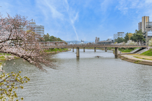
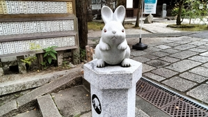
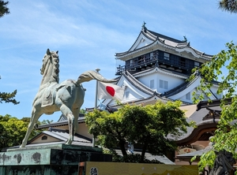
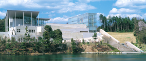
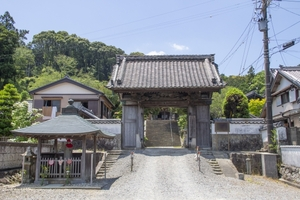
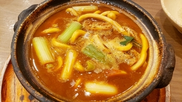
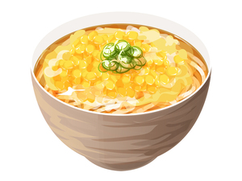
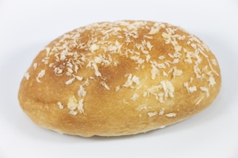
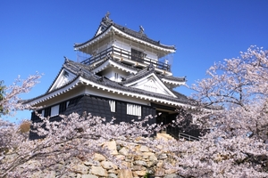
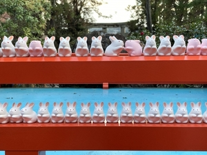

岡崎市は愛知県のほぼ中央に位置する市です。中核市、中枢中核市に指定されています。徳川家康の生誕地で有名な岡崎城や、八丁味噌の産地としても知られています。[1]
岡崎市について
歴史
岡崎という地名は、もともとは中世に明大寺町にあったとされる明大寺城や矢作宿が、竜美ヶ丘のある丘陵の出崎にあったことから名付けられたものとされる。[2]
観光地
- 岡崎城- 徳川家康が生まれ、1560年(永禄3)の桶狭間の戦いの後に天下統一のための拠点とした岡崎城。
- 岡崎市美術博物館 - 愛知県岡崎市・岡崎中央総合公園内にある美術博物館
- 法蔵寺 - 家康公が幼少のころ、手習いや漢籍などの学問に励んだと伝えられる寺。[3]   
名物料理
- 味噌煮込みうどん - 仕立ての汁にコシの強いうどんを入れて煮こんでつくる料理
- もろこしうどん - とろみのついたほど良い濃さの和風だしに溶き卵とコーンの甘さがしっかり絡み合ったまろやかでやさしい味わいのうどんです。
- 岡崎カレーパン - 八丁味噌を用いて、サクサクのパン生地が特徴的なカレーパン   
イベント
岡崎市では年間を通じて多くのイベントが開催されています。特に有名なイベントをいくつか紹介します。
- 桜祭り 家康行列 - 毎年春になると開催され、岡崎城のある岡崎公園一帯と伊賀川堤を中心に約800本のソメイヨシノが満開になります
- 岡崎城下家康公夏まつり - 毎年夏に行われ、仕掛け花火や、金魚花火など様々な花火を見ることができます
- 滝山寺の鬼祭り - 毎年2月に行われるこの祭りは、愛知県指定無形民俗文化財にも登録されている天下泰平五穀豊穣をお祈りするお祭りです。[5]

文化
岡崎市の文化は、歴史的な背景や地理的条件によって形成されました。以下は、岡崎市の代表的な文化的要素です。
- 伝統工芸 - 岡崎石工品、三河仏壇など。[6]
- 舞台芸術 - 演劇、能楽、岡崎ジャズストリートなど
- 祭り - 多くの伝統的な祭りが地域ごとに行われています。

アクセス
岡崎市へのアクセスは非常に便利です。名古屋駅から岡崎駅へは東海道本線で約30分。車では約60分です。[4]